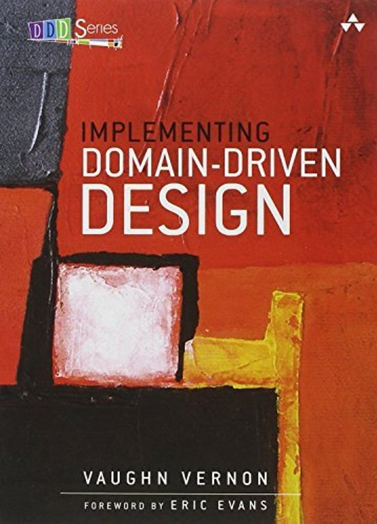

Domain-driven design

Introduction
"The Blue Book"
Domain-Driven Design: Tackling Complexity in the Heart of Software
Eric Evans, 2003

"The Red Book"
Implementing Domain-Driven Design
Vaughn Vernon, 2013
What is domain-driven design?
DDD is a set of tools that assist in designing and implementing software that delivers high value, both strategically and tactically.
Traditional software issues
- Developers and domain experts talk in different languages, making it difficult for them to understand each other and collaborate
- Software that gets developed often results in a translation/mapping between how the business thinks/operates and how the developer interprets that
- Changes to the software take a lot of time to implement, and code breaks easily when changes are made
How DDD helps
- Creates a common, shared language between the domain experts, the software developers, and the software, without requiring translation in between
- Facilitates a creative collaboration between domain experts and technical experts (developers), in order to produce software with high value for the business
- Results in software that is built for change
Strategic design
- Helps to understand what are the most important software investments to make
- Helps to cleanly separate systems and business concerns
Tactical design
- Allows developers to produce software that correctly reflects the mental model of the domain expert(s)
- Allows developers to produce software that is highly testable and less error prone
The Ubiquitous Language
- ubiquitous (adjective)
- Present, appearing, or found everywhere.
- ubiquitous language
- A shared language developed by the team - a team composed of both domain experts and software developers.
The ubiquitous language...
- is shared by everyone on the project team
- is used everywhere within that team: in code, discussions, issue trackers (JIRA), etc.
- is developed by having discussions with both consensus and compromise
- only exists within a specific (bounded) context
- grows and changes over time
Domains, Subdomains, and Bounded Contexts
- domain
- A sphere of knowledge, influence, or activity. The subject area to which the user applies a program is the domain of the software.
Subdomains
Any attempt to define the business of even a moderately complex organization in a single, all-encompassing model will be at best extremely difficult and will usually fail.
- The goal is not to create a single, all-inclusive model of an organization's entire business domain.
- Instead, domain models should be focussing on only one specific area of the whole business domain.
Types of subdomains
- core domain
- A part of the business domain that is of primary importance to the success of the organization.
- supporting subdomain
- A part of the business domain that is essential, yet not core. It is somewhat specialized.
- generic subdomain
- A part of the business domain that captures nothing special to the business, but is required for the overall business solution.
Context
Every use of a given domain term, phrase, or sentence has a specific contextual meaning. Any use of the term outside that (bounded) context could, and probably does, mean something different.
Definitions
- domain
- A sphere of knowledge, influence, or activity. The subject area to which the user applies a program is the domain of the software.
- model
- A system of abstractions that describes selected aspects of a domain and can be used to solve problems related to that domain
- ubiquitous language
- A language structured around the domain model and used by all team members to connect all the activities of the team with the software.
- context
- The setting in which a word or statement appears that determines its meaning. Statements about a model can only be understood in a context.
- bounded context
- A description of a boundary (typically a subsystem, or the work of a particular team) within which a particular model is defined and applicable.
Tactical DDD
Domain objects
- Entities
- Value objects
Entities
- Have their own identity
- Have a lifecycle
- Their attributes may change over time
Value Objects
- Have no conceptual identity
- Cannot change over time
Aggregates
Further reading
Domain-Driven Design Reference
Eric Evans, 2015
Domain-Driven Design Distilled
Vaughn Vernon, 2016